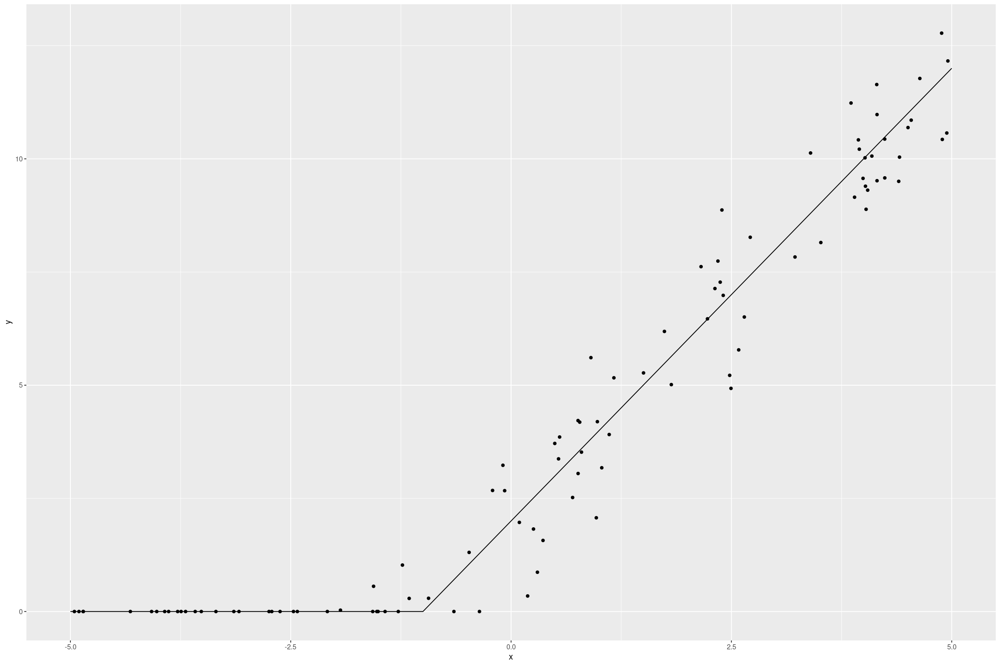
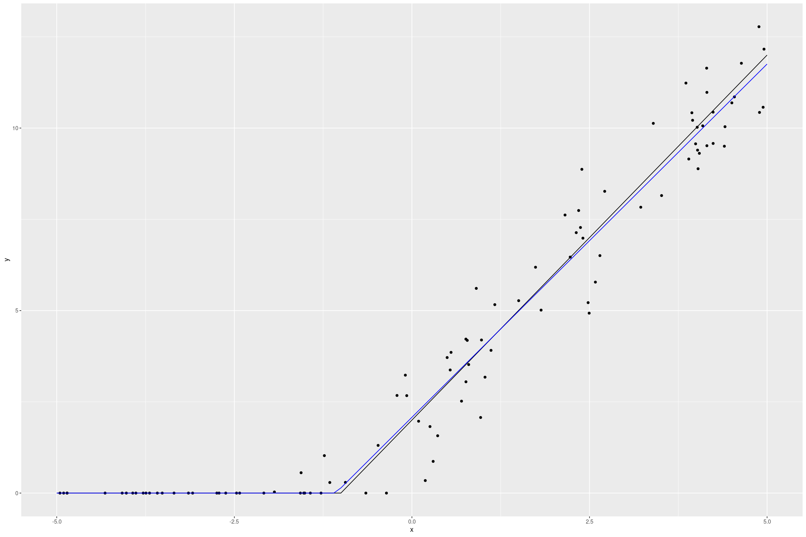
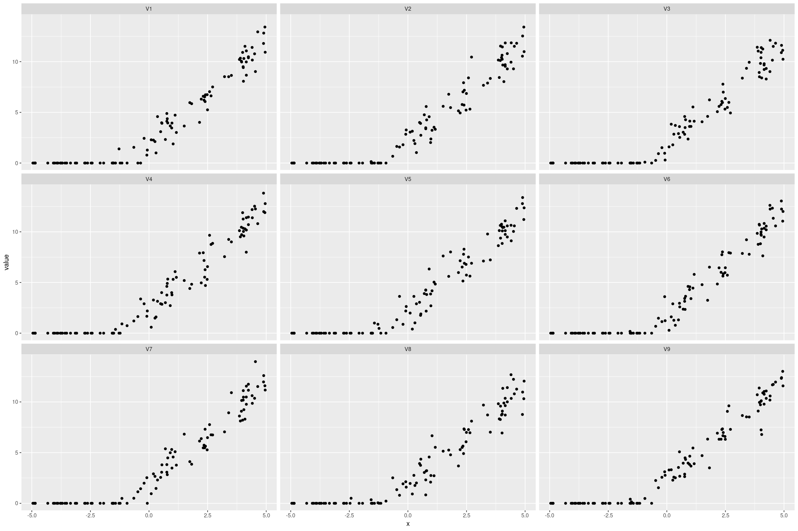
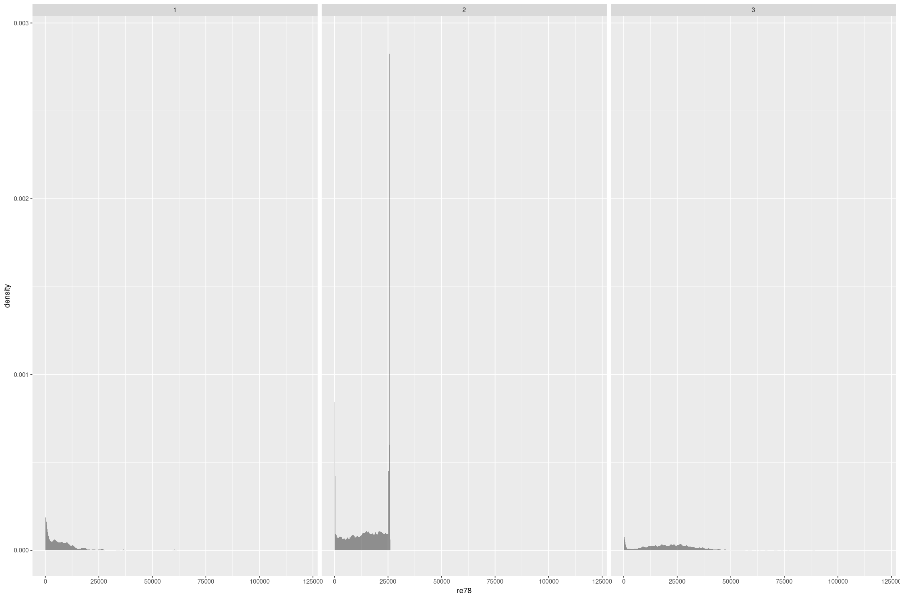
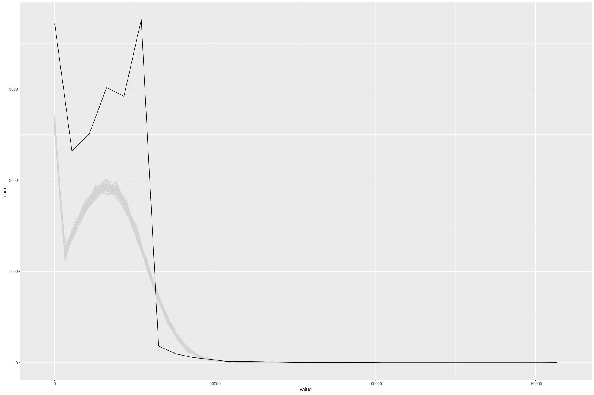
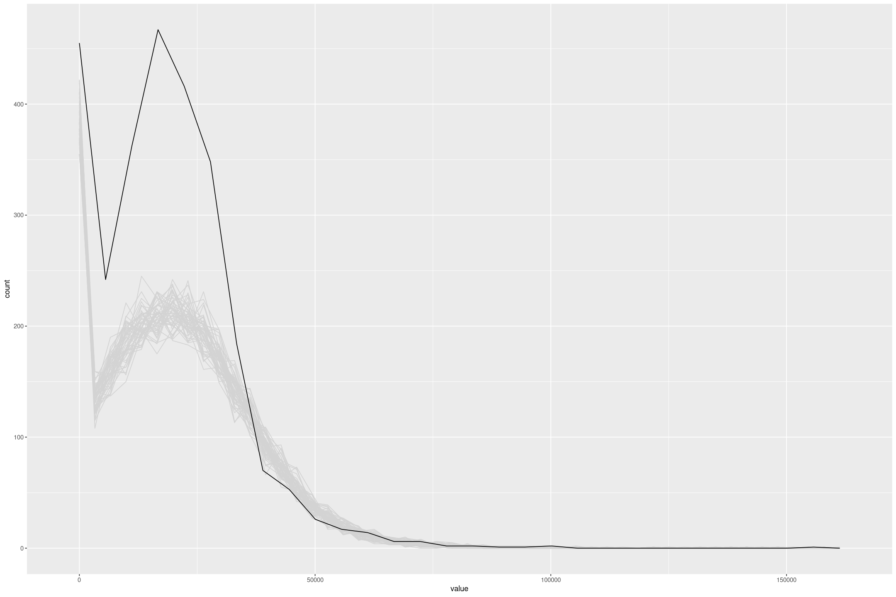

Tobit Regression in Stan and R
This article shows coding Tobit Regression in Stan, integrating it into R, showing it works on a simulated dataset and then running it on a real dataset. This is the last in a series of articles on building a Stan model in R, but is mostly independent of them. We’ve fit a linear model in RStan, added priors, and added predictions. Now we’re going to build a non-trivial model to show how to extend this.
Tobit Regression
The Tobit model, first proposed by James Tobin in 1958, treats this censoring instead of treating it as a true value, saying that it indicates some value at least that much. It’s a simple, but statistically reasonable, way of handing censored data. Tobin showed how to calculate the likelihood for Maximum Likelihood Estimation, but here we’re going to try Bayesian methods.
From the Stan Users Guide we can just treat the censored values as parameters from the same distribution. We break our data into censored and uncensored components to make this easier (although I think for more complex models it would be better to handle this with a conditional in Stan). For simplicity I’ll use flat priors, and just look at censoring from below, and assume that all our data is censored at the same point L.
// Lower censored tobit model - tobit_lower_flat.stan
data {
int<lower=0> N_obs; // Number of observed data points
int<lower=0> N_cens; // Number of censored data points
int<lower=0> K; // Number of predictors
matrix[N_obs, K] X_obs; // Observed predictor matrix
matrix[N_cens, K] X_cens; // Censored predictor matrix
real y_obs[N_obs]; // Observations (non-censored)
real<upper=min(y_obs)> L; // Value where censoring occurs
}
parameters {
vector[K] beta; // coefficients for predictors
real<lower=0> sigma; // error scale
real<upper=L> y_cens[N_cens]; // The underlying censored values
}
model {
y_obs ~ normal(X_obs * beta, sigma); // target density - observed points
y_cens ~ normal(X_cens * beta, sigma); // target density - censored points
}Then as before we can wrap it in an R function with rstan, doing the work of identifying the censored values in the function and returning an S3 object with all the required information.
fit_stan_tobit_lower_flat <- function(formula, data, L=NULL, ...) {
y <- model.response(model.frame(formula, data))
X <- model.matrix(formula, data)
if (is.null(L)) {L = min(y)}
if (min(y) < L) {stop("Minimum value below censored value")}
if (min(y) > L) {warning("No censored values")}
X_cens = subset(X, y == L)
X_obs = subset(X, y > L)
y_obs = subset(y, y > L)
K <- ncol(X)
fit <- rstan::stan(
file = "tobit_lower_flat.stan",
data = list(
N_obs = nrow(X_obs),
N_cens = nrow(X_cens),
K = K,
X_obs = X_obs,
X_cens = X_cens,
y_obs = y_obs,
L = L
),
...
)
sigma <- as.matrix(fit)[, "sigma"]
# Set names of the coefficients
names(fit)[1:ncol(X)] <- colnames(X)
structure(list(fit=fit,
coef_names=colnames(X),
sigma=sigma,
L=L,
terms=terms(formula, data=data),
data=data),
class=c("stan_tobit_lower", "stan_wrapper"))
}Making Predictions
We can then change our functions that make predictions to (optionally) perform the censoring on predictions:
predict.stan_tobit_lower <- function(object, newdata=NULL, type="link") {
if (!(type %in% c("link", "response"))) {
stop("Unexpected type; should be 'link' or 'response'")
}
if (is.null(newdata)) {
newdata = object$data
}
mm <- model.matrix(delete.response(object$terms), data=newdata)
coef_matrix <- as.matrix(object$fit)
coefs <- apply(coef_matrix, 2, median)[colnames(mm)]
preds <- (mm %*% coefs)[,1]
if (type == "response") {
preds <- if_else(preds > object$L, preds, object$L)
}
unlist(preds)
}And similarly for posterior predictions (note the use of drop=FALSE to prevent R from coercing a matrix into a vector):
posterior_predict.stan_tobit <- function(object, newdata=NULL, draws=NULL) {
if (is.null(newdata)) {
newdata = object$data
}
mm <- model.matrix(delete.response(object$terms), data=newdata)
coef_matrix <- as.matrix(object$fit)
if (!is.null(draws)) {
if (draws > nrow(coef_matrix)) {
stop("More draws than rows")
}
# Take a random sample of draws
coef_matrix <- coef_matrix[sample.int(nrow(coef_matrix), draws), , drop=FALSE]
}
point_preds <- coef_matrix[,object$coef_names, drop=FALSE] %*% t(mm)
preds <- rnorm_matrix(point_preds, object$sigma)
preds <- matrix(if_else(preds > object$L, preds, object$L), ncol=nrow(mm))
colnames(preds) <- rownames(newdata)
preds
}Testing it on a simulated dataset
Whenever coding a new statistical model it’s always worth testing it on a simulated dataset, as it gives an idea of how well it will perform under ideal conditions (and so it will do much worse in practice). Here’s an ideal censored dataset.
n <- 100
fake_tobit <- tibble(x = runif(n, -5, 5),
z = rnorm(n, 2*x + 2, 1),
y = if_else(z > 0, z, 0))
fake_tobit %>%
gf_point(y ~ x) %>%
gf_line(if_else(2*x+2 > 0, 2*x+2, 0) ~ x, data=data.frame(x=seq(-5,5,by=0.1)))
The Tobit model recovers the underlying data quite well
fit_tobit_fake <- fit_stan_tobit_lower_flat(y ~ x, data=fake_tobit, L=0)
tobit_preds <- data.frame(x=seq(-5,5,by=0.1)) %>%
mutate(y=predict(fit_tobit_fake, newdata=., type="response"))
fake_tobit %>%
gf_point(y ~ x) %>%
gf_line(if_else(2*x+2 > 0, 2*x+2, 0) ~ x, data=tobit_preds) %>%
gf_line(y ~ x, data=tobit_preds, col="blue")
We can also simulate datasets from the model that look similar to the original data:
posterior_predict(fit_tobit_fake, draws=9) %>%
t() %>%
as.data.frame() %>%
cbind(fake_tobit) %>%
pivot_longer(starts_with('V')) %>%
gf_point(value ~ x | name) 
Fitting on a real dataset
Background
The original impetus for this came from Regression and Other Stories Exercise 15.7, to fit a Tobit regression on the Lalonde dataset. The underlying data comes from Propensity Score-Matching Methods for Nonexperimental Causal Studies by Dehejia and Wahba, who renalyse data from Evaluating the Econometric Evaluations of Training Programs with Experimental Data by Lalonde, based the National Supported Work experiment. From Lalonde’s paper:
The National Supported Work Demonstration (NSW) was a temporary employment program designed to help disadvantaged workers lacking basic job skills move into the labor market by giving them work experience and counseling in a sheltered environment. Unlike other federally sponsored employment and training programs, the NSW program assigned qualified applicants to training positions randomly. Those assigned to the treatment group received all the benefits of the NSW program, while those assigned to the control group were left to fend for themselves.
Lalonde presents an estimate of the effect by comparing the treatment to a control group. Then this is compared with stanard econometric techniques of comparing to a broader similar non-control sample (from the Population Survey of Income Dynamics and the Current Population Survey), adjusting for demographic variables with linear regression. The econometric techniques give a very poor estimate of the effect.
The Dehejia and Wahba paper use a method of propensity matching to find appropriate comparison groups. It seems like they try to calculate the probability an observation in the comparison group would have been treated using logistic regression on the observed variables. Then they pair samples/controls based on ones that have a similar predicted probability (with or without replacement). They claim this gives similar outcomes results to comparing with the experimental control group.
The underlying data is available on Rajeev Dehejia’s website and we will use a prepared sample from Regression and Other Stories.
Examining the data
treat: 1 = experimental treatment group (NSW); 0 = comparison group (either from CPS or PSID) Treatment took place in 1976/1977. re74, re75, re78: real earnings in 1974, 1975 and 1978
We are going to focus on how the real earnings in 1978, re78 is impacted by the experimental treatment, treat, conditioned on the real earnings the year before intervention, re75. There are 3 very different sample compositions, 1 is people who were treated, 2 is from the Current Population Survey, and 3 is from the Panel Study of Income Dynamics (the Dehejia and Wahba paper find similar subsamples from the broader surveys). In all cases there’s a terminal spike at an earnings of $0, and in the Current Population Survey another terminal spike a bit over $25,000 that indicate censoring.
lalonde <- foreign::read.dta('https://raw.githubusercontent.com/avehtari/ROS-Examples/master/Lalonde/NSW_dw_obs.dta')
lalonde %>%
gf_density(~re78 | sample, bw="SJ")
Fitting the model
We can fit a Tobit model to deal with the censoring from below, saying there is an underlying earnings that is less than 0 that we just can’t measure. I don’t think this would make literal sense in policy circles, because we’re talking about fictional earnings, but there could be underlying validity in that it takes more to get some people to positive earnings than others. In any case we can fit a model, and to deal with censoring in re75 we treat the case of 0 income as another predictor:
fit_lalonde_tobit_flat <- fit_stan_tobit_lower_flat(re78 ~ re75 + treat + as.integer(re75==0),
L=0,
data=lalonde)The coefficients give a large but significant impact on treatment, and the correlation with 1975 income is reasonable (and would be better if we treated that as censored too).
| Coefficient | median | mad_sd |
|---|---|---|
| (Intercept) | 4655 | 134 |
| as.integer(re75 == 0) | -4335 | 256 |
| re75 | 0.75 | 0.01 |
| treat | 1740 | 677 |
| sigma | 8744 | 51 |
Assessing model fit
The model fit isn’t great, it has a higher Mean Squared Error than a simple linear regression, and the posterior draws don’t match the data, partly because of the lack of upper censoring, but also because model isn’t concentrated enough.
posterior_predict(fit_lalonde_tobit_flat, draws=50) %>%
as.data.frame() %>%
mutate(draw=row_number()) %>%
pivot_longer(-draw) %>%
gf_freqpoly(~value, group=~draw, colour='lightgrey', bins=50) %>%
gf_freqpoly(~re75, group=FALSE, data=lalonde)
We can make this more obvious by excluding the CPS with the upper censored data (sample = 2). To improve the model I’d look at making some transformation to the incomes (but Tobit regression giving negative values precludes a straight log or squareroot transformation).
fit_lalonde_tobit_flat_subset <- fit_stan_tobit_lower_flat(re78 ~ re75 + treat + as.integer(re75==0),
L=0,
data=subset(lalonde, lalonde$sample!=2))
posterior_predict(fit_lalonde_tobit_flat_subset, draws=50) %>%
as.data.frame() %>%
mutate(draw=row_number()) %>%
pivot_longer(-draw) %>%
gf_freqpoly(~value, group=~draw, colour='lightgrey', bins=50) %>%
gf_freqpoly(~re75, group=FALSE, data=subset(lalonde, lalonde$sample!=2))
In this particular case I don’t think Tobit regression is fit for purpose, but it’s a new tool I have in my toolbox.
Dealing with Censored Data
To me it seems like magic that I can tell Stan that the data is less than 0, and get it to simulate it and fit a reasonable model. We could integrate out the censored value which would be more memory efficient with a large number of censored values; but the generative approach is quite appealing. For example job salaries tend to be quoted in ranges; when estimating the salary of a job instead of picking a point we could treat it in Stan as an unknown value uniformly distributed between the minimum and maximum values. Similarly many real measurements have non-uniform errors, potentially in both the response and the predictors, that we could incorporate into the model so it doesn’t overfit to highly uncertain measurements. And there are classic examples of censoring such as survival analysis where we want to incorporate the fact some entities have survived in working out the expected duration of failures.
It takes a bit of work to encode models in Stan, and I imagine in real modeling scenarios there would be a lot more model specific Stan code and cycling between R and Stan. But where possible being able to specify flexible models with a formula syntax is a really powerful way of getting a lot of leverage from a single Stan model.